| demo_spinners {cli} | R Documentation |
Each spinner is shown for about 2-3 seconds.
demo_spinners(which = NULL)
which |
Character vector, which spinners to demo. |
demo_spinners("clock")

Other spinners:
get_spinner(),
list_spinners(),
make_spinner()